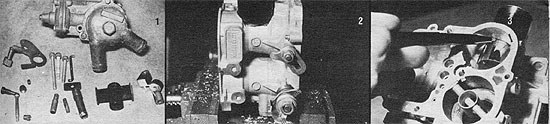

[1] The parts removed (after separating the air horn from the main body) from the Pinto carburetor include ?clockwise from the top ? the choke thermostat assembly, two casting bosses (cut from the main body's upper left side, next to the primary bore), the secondary booster venturi, the brass vent fitting, the fuel mixture stop pin, the distributor vacuum advance fitting, the secondary main metering jet, main well tube, idle jet, high speed bleed, and operating lever. The center group includes unneeded choke parts. [2] Place the body in a vise and ? using a 1-1/4"" hole saw ? bore an opening into the rear wall of the secondary barrel, centered and 1-7/16 inches up from the base. [3] Cut a 3-1/2"" length of 1-1/4"" thinwall chromed sink drainpipe and slide it into the opening so it butts against the shoulder of the booster venturi slot. Mark the cutting line with a felt-tip pen, using the barrel's wall as a guide, then cut along the mark with aviator's snips.